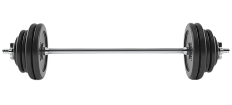

바벨 드래그 컬
- 바벨을 어깨너비보다 약간 넓게 잡고, 팔을 완전히 펴고 몸 앞에 둔다.
- 팔꿈치를 몸에 붙인 상태에서 바벨을 천천히 들어올린다.
- 바벨이 몸에 닿도록 하여 수직으로 올리는 것이 아니라 몸 쪽으로 드래그하듯이 들어올린다.
- 바벨이 가슴 쪽에 가까워지면 잠시 정지하여 이두근의 긴장을 느낀다.
- 이때 호흡은 뱉는다.
- 천천히 바벨을 다시 시작 위치로 내린다. 이때도 팔꿈치를 몸에 붙여서 내리도록 한다.
- 이때 호흡은 마신다.
주의사항
- 목과 허리는 곧게 유지해야 하며, 허리를 과도하게 구부리거나 아치형으로 만들지 않도록 주의한다.
- 뺘른속도로 하지 말고 천천히 근육의 긴장을 느껴야 한다.
- 지나치게 무거운 중량은 잘못된 자세를 유발할 수 있어 부상의 원인이 된다.
운동부위 및 효과
- 이두근, 전완근
- 이두근의 모양을 만들고, 탄탄한 팔 라인을 형성하는 데 효과적이다.